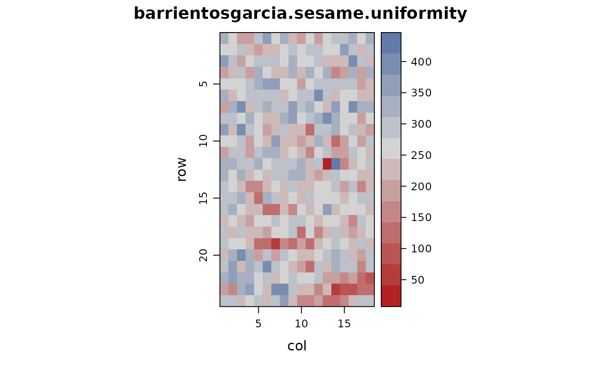
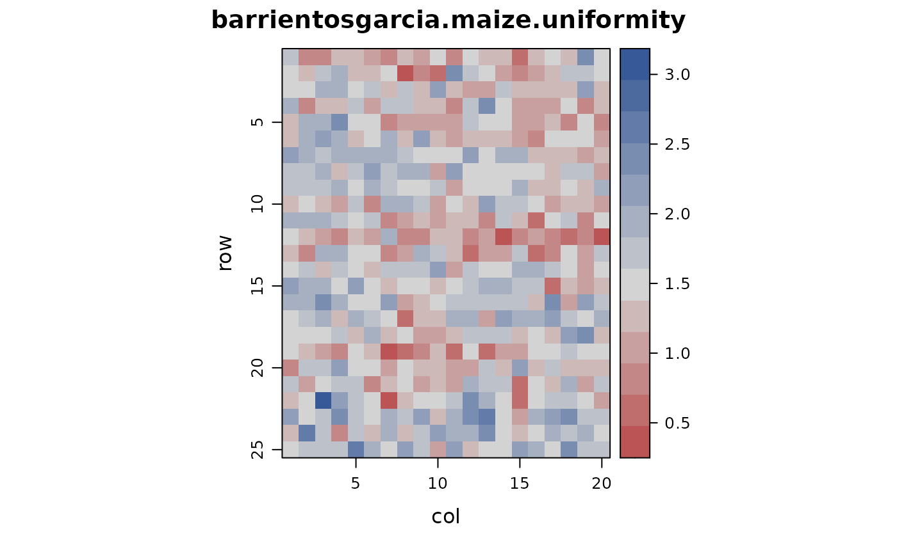

Uniformity trials of sesame and maize in Guatemala
barrientosgarcia.sesame.uniformity.RdUniformity trials of sesame and maize in Guatemala
Usage
data("barrientosgarcia.sesame.uniformity")Format
A data frame with 432 observations on the following 3 variables.
rowrow ordinate
colcolumn ordinate
yieldyield per plot, sesame (g) and maize (kg)
Details
Year of experiment is not given (as far I can tell). Assume early 1981.
#### Uniformity trial of sesame, page 31-32
Field width: 18 columns * 1.5 m = 27 m
Field length: 24 rows * 2 m = 48 m
Location of the trial: Latitude 14 deg N, 18 min, 23 sec, longitude 91 deg, 33 min, 52 sec.
Planting at distances of 0.75 m between rows and 0.25 m between planting spots (hills).
From the total planted area of 31 x 52 m, 2 m borders and 2 m headlands were discarded, resulting in a useful area of 27 x 48 m. This area was divided into 432 plots (basic units) of 1.5 x 2 m. Yield from these was collected separately in bags numbered consecutively according to the position of each plot within the field. In Table No. 1, the yield values can be seen, expressed in grams per basic unit along with their corresponding locations.
#### Uniformity trial of maize, page 34-35
Field width: 20 columns * 2 m = 40 m
Field length: 25 rows * 2 m = 50 m
Location of the trial: Chimaltenango, latitude 14 deg N, 39 min, 20 sec. Longitude 90 deg, 49 min, 20 sec.
The gross area was 44 x 54 m and the net area was 40 x 50 m, which was divided into 500 basic units of 2m x 2m. At the time of harvest, the ear weight (cob weight) was recorded as the yield, which was subsequently converted into grain weight by determining a shelling factor through stratified sampling, and then corrected to a standard moisture content of 15
Data provenance: Data scanned from thesis, page 61-62. Hand-checked by K.Wright.
Source
Barrientos Garcia, Marino (1981). Evaluación de 4 métodos para la determinación de tamaño y forma óptimos de parcela para experimentación agrícola. Thesis, Universidad de San Carlos de Guatemala. http://biblioteca.usac.edu.gt/tesis/01/01_0564.pdf
Examples
library(agridat)
data(barrientosgarcia.sesame.uniformity)
data(barrientosgarcia.maize.uniformity)
dat1 <- barrientosgarcia.sesame.uniformity
dat2 <- barrientosgarcia.maize.uniformity
mean(dat1$yield) # thesis has 258.211 on page 63
#> [1] 258.1875
# 258.1875
var(dat1$yield) # thesis has 3680.533
#> [1] 3680.283
# 3680.283
libs(desplot)
desplot(dat1, yield ~ col*row,
flip=TRUE, tick=TRUE, aspect=(24*2)/(18*1.5),
main="barrientosgarcia.sesame.uniformity")

mean(dat2$yield) # thesis has 1.4819 page 65
#> [1] 1.480386
# 1.4804
var(dat2$yield) # thesis has 0.1858
#> [1] 0.18621
# 0.1862
desplot(dat2, yield ~ col*row,
flip=TRUE, tick=TRUE, aspect=(25*2)/(20*2),
main="barrientosgarcia.maize.uniformity")
